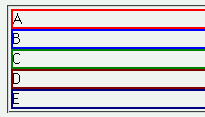
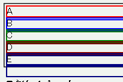

垂直方向のマージンに負の値が指定された要素を含む、要素のボーダーや背景が本来の位置と外れた場所に表示される。
<div style="border:2px solid red;"><div style="margin:-1px;">A</div></div> <div style="border:2px solid blue;"><div style="margin:-1px;">B</div></div> <div style="border:2px solid green;"><div style="margin:-1px;">C</div></div> <div style="border:2px solid maroon;"><div style="margin:-1px;">D</div></div> <div style="border:2px solid navy;"><div style="margin:-1px;">E</div></div>
それぞれのdiv要素のボックスは上部が1pxずつ重なって表示されます。
Moz1.0での表示（標準モード）
WinIE6.0での表示（標準モード）
WinIE6.0では標準・互換モードともにボーダーのずれが発生します。